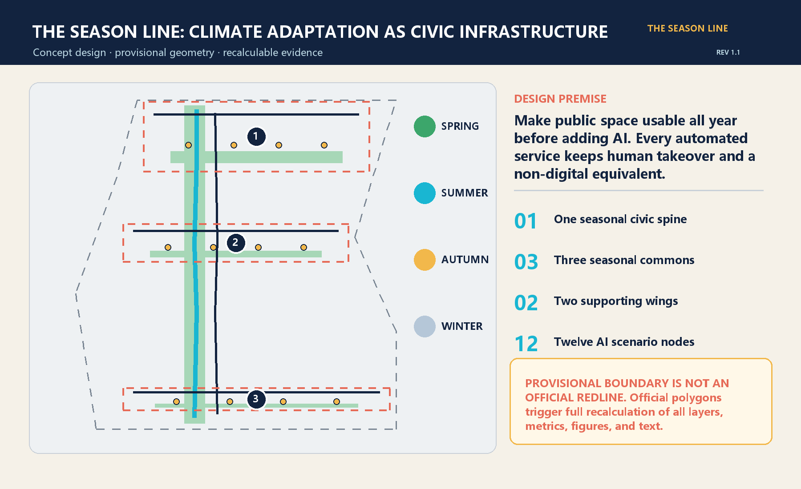
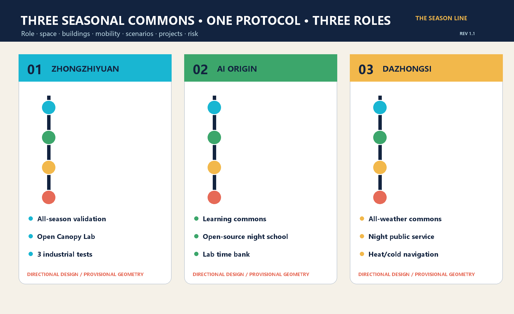
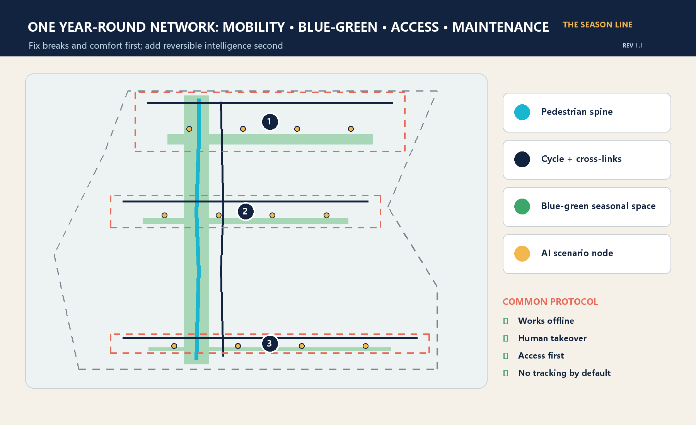

Zhongzhiyuan Validation Garden
Devices, robots, and compute are tested in real weather.
An AI civic living room that works all year
Overview · Three scopes · Key areas · Land use · Mobility · Blue-green space · Buildings · Renewal projects · AI scenarios · Metrics · Task coverage · Self-check · Sources · Assumptions

Devices, robots, and compute are tested in real weather.
Research reaches the city through night school, time bank, and bilingual explanation.
Public service, night logistics, and talent arrival; location awaits official data.


Each card states place, users, data, privacy, takeover, operation, and risk.
Naming, cases, scenarios, landmarks, culture, and operations all have narrative evidence.
Dependency-free validation, spatial recalculation, static visual, and package integrity.
Announcement, site package, Beijing climate policy, and six official global cases. Full URLs and dates are in sources.json.
Boundary, key areas, controls, basemap, buildings, climate, privacy, and implementation limits are structured.